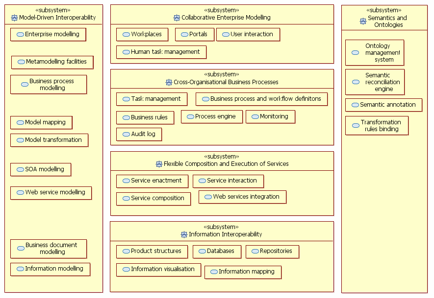
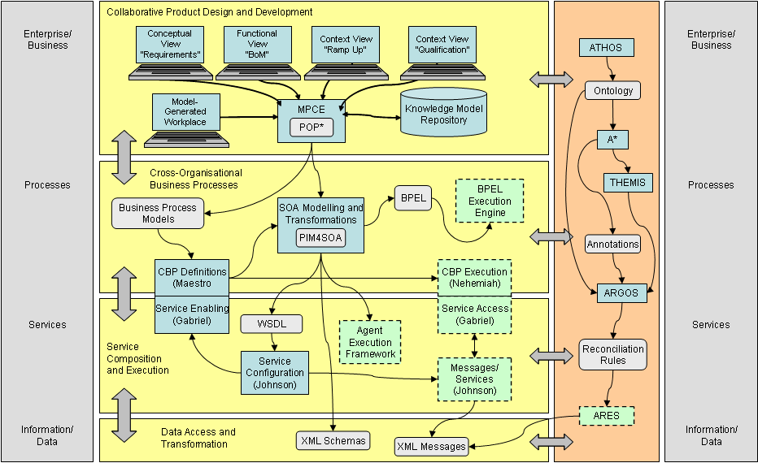

")

Technical architecture
Service-oriented archictecture
The technical architecture proposed by ATHENA follows the principles of a service-oriented architecture (SOA). SOA refers to the latest trend in system architectures where typically Web services and technologies play an important part in achieving interoperability.
Service-oriented development emerged as an evolution of the component-based development and among its goals is to support the loose coupling of system parts in a far better way than existing component-based technologies.
The OASIS reference model for SOA [OASIS] defines SOA as:
“Service-oriented architecture (SOA) is a paradigm for organising and utilising distributed capabilities that may be under the control of different ownership domains.”
According to this definition SOA differs in organising and understanding information communication technology (ICT) related to previous approaches:
- First, SOA reflects the reality that ownership boundaries are a motivating consideration in the architecture and design of systems.
- Second, SOA applies the lessons learned from commerce to the organisation of ICT assets to facilitate the matching of capabilities and needs.
The value of SOA is that it provides a simple scalable paradigm for organising large networks of systems that require interoperability. The ramifications of service-oriented development can be observed both at the system and the business level. Having systems composed of services offered by various service providers provides the basis for supporting new business models, such as “virtual organisations”. Services can be seen as business capabilities that support the enterprise. From the ICT perspective, a service is an ICT representation of business functionality that is implemented via multiple messages that return state and/or change state of an associated entity.
SOA also allows us to integrate more adaptive and dynamic architectures such as enterprise knowledge architectures, business process management suites, agent architectures and peer-to-peer (P2P) architectures. SOA aims to promote software development in a way that leverages the construction of dynamic systems which can easily adapt to volatile environments and be easily maintained as well. The decoupling of system constituent parts enables the re-configuration of system components according to the end-user’s needs and the system’s environment. Furthermore, the use of widely accepted standards and protocols that are based on XML and operate above internet standards (HTTP, SMTP, etc) enhances interoperability.
Technical architecture of the ATHENA platform
A SOA platform provides all the necessary services to develop new software capabilities and integrate existing enterprise applications and systems. There is a trend towards SOA platform consolidation which includes data and information integration services, service communication and application integration services, business process and composite application services, and interaction and workplace services. In addition, modelling capabilities are being included as part of modern SOA platforms.
The ATHENA platform is illustrated in the figure below according to the ATHENA interoperability reference architecture. It shows some of the main functionality offered by software tools and infrastructure components developed (or offered by partners) in ATHENA.

The figure below gives a high-level description of one possible implementation of the technical architecture using and configuring technical solutions components developed in ATHENA.
